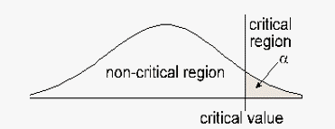
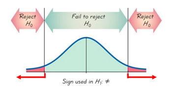

4.1 Introduction to Hypothesis Testing
Sociology Study from the Yale Infant Cognition Center:
View the Helper or Hinderer Video
- If 16 infants participated in this study, how many do you think chose the helper toy? Why? What factors do you think might be at play when the infants make their choice?
Possible response: Maybe 12 to 15 of the infants would choose the helper toy and the rest would choose the hinderer toy.
- What are some possible hypotheses we could make for this situation regarding infants and their choice of a toy?
Example: The infants chose the brighter toy.
Example: The infants chose the softer toy.
- If infants really do NOT have a preference for the helper or the hinderer toy, what would be the most likely outcome (number of infants choosing the helper toy) when this study is conducted on 16 infants?
Half of the infants would choose the helper toy and half of the infants would choose the hinderer toy.
- Still assuming that infants show NO preference between the helper and hinderer, what kind of results (for number of infants choosing the helper toy) would NOT surprise you when this study is conducted on 16 infants? How far off your guess from number 3 could you go and it still be “okay?”
Possible response: Maybe nine infants would choose the helper toy and 7 infants would choose the hinderer toy.
- The researchers actually found that ________ of the 16 infants in the study selected the helper toy. If it is REALLY the case that infants show NO preference between the helper and hinderer toy, do you find the researchers’ results surprising? Why or why not?
Yes, because 14 is far higher than half of the number of infants.
- A key question is, “How surprising is the observed result under the assumption that infants have NO real preference for the helper toy or the hinderer toy?”
- We will call this assumption of no real preference the null hypothesis.
- Let’s simulate this situation using coin flips. If children truly have no preference, they will have a 50/50 chance of picking the helper toy.
- We will use technology to simulate completing this experiment many, many times (100, 500, 1000 times) under the assumption that the null hypothesis is true – that infants show no preference of choice over the Helper or Hinderer toy. Based on this simulation, how surprising are the actual results of this study? Explain your reasoning.
The results are quite surprising since the simulation shows the probability of getting 14 heads when flipping 16 coins is only about 0.002 (or 0.2%). In other words, the simulation shows the probability of 14 infants choosing the helper toy, given that the choice is random, is only about 0.2%. This is considerably less than 5%.
- Based on our simulations, what conclusion should the researchers draw? Justify your conclusions.
The researchers should reject the null hypothesis that infants show no preference for the helper toy.
- If the actual study had instead found that 9 of the 16 infants chose the Helper toy, then what decision should the researchers make based on this result? Justify your conclusions.
In this case the researchers should not reject the null hypothesis that infants show no preference for the helper toy because 9 is close to half of 16. With the random coin flips, the probability of 9 heads when flipping 16 coins is about 18%.
- Translate the following into inequalities.
Words Inequality The mean is at least 2. \(\mu \geq 27\)
The proportion is less than 25%. \(p<0.25\)
The mean is no more than 18. \(\mu \leq 18\)
The proportion is more than 0.21. \(p>0.21\)
The proportion is at least 26%. \(p \geq 0.26\)
The mean is 16. \(\mu=16\)
The mean is less than 4. \(\mu<4\)
The proportion is not 50%. \(p \neq 0.50\)
- Let’s say we want to test the claim that the 2020 Toyota Prius gets an average of at least 58 miles per gallon during city driving.
- Claim:
\( \mu \geq 58 \) - \(H_0\):
\( \mu \geq 58 \) - \(H_A\):
\( \mu < 58 \)
The null hypothesis is what we assume to be true about the population parameter. It must use =, \(\leq\), or \(\ge \).
The alternate hypothesis is the complement of the null hypothesis.
The alternate hypothesis determines whether you have a left-tailed, right-tailed, or two-tailed test.
This is a left-tailed test. The critical region is located where the average miles per gallon is significantly less than 58 miles per hour.
- Claim:
- Suppose we want to test the claim that the mean wait time for a GrubHub delivery is more than 40 minutes.
- Claim:
\( \mu > 40 \) - \(H_0\):
\( \mu \leq 40 \) - \(H_A\):
\( \mu > 40 \) - Type of test:
Right-Tailed
The critical region is located where the mean wait time is significantly greater than 40 minutes.

- Claim:
- Golf balls must weigh 1.615 ounces to receive a top rating in the industry. One company claims their competitor’s golf balls do not weigh 1.615 ounces.
- Claim:
\(\mu \neq 1.615\) - \(H_0\):
\(\mu = 1.615\) - \(H_A\):
\(\mu \neq 1.615\) - Type of test:
Two-Tailed
The rejection regions are where the average weight of the competitor’s golf balls is significantly different than 1.615 ounces.

- Claim:
- The percentage of all students who eat sushi at least once per week is less than 27%.
- Claim:
\(p < 0.27\) - \(H_0\):
\(p \geq 0.27\) - \(H_A\):
\(p < 0.27\) - Type of test:
Left-Tailed - Where is the critial region located?
Where the proportion of all students who eat sushi is less than 27%, - Suppose our sample data leads us to reject the null hypothesis. Write a sentence for our conclusion.
There is sufficient sample evidence to support the claim that the percentage of all students who eat sushi at least once per week is significantly less than 27%.
- Claim:
- A researcher claims that if knee replacement patients go to physical therapy only two times per week instead of three times, then their recovery will take longer than the average of 8.2 weeks.
- Claim:
\( \mu > 8.2 \) - \(H_0\):
\( \mu \leq 8.2 \) - \(H_A\):
\( \mu > 8.2 \) - Type of test:
Right-Tailed - Suppose the researcher fails to reject the null hypothesis. Write a concluding statement.
There is not sufficient sample evidence to support the claim that if knee replacement patients go to physical therapy only two times per week instead of three, then their recovery will take longer than 8.2 weeks.
- Claim:
- The percentage of people who prefer milk chocolate over dark chocolate is 70% as claimed by Madison advertising agency.
- Claim:
\(p=0.7\) - \(H_0\):
\(p=0.7\) - \(H_A\):
\(p \neq 0.7\) - Type of test:
Two-Tailed - Suppose we reject the null hypothesis. Write a concluding statement.
There is sufficient sample evidence to reject the claim that the percentage of people who prefer milk chocolate over dark chocolate is 70%.
- Claim:
Hypothesis Testing with One Sample
| Symbols for the Null Hypothesis | Symbols for the Alternate Hypothesi | Type of Test |
|---|---|---|
| \(\mu =\) | \(\mu \neq\) | Two-tailed |
| \(\mu \leq\) | \(\mu >\) | Right-tailed |
| \(\mu \geq\) | \(\mu < \) | Left-tailed |
| \(\rho =\) | \(\rho \neq\) | Two-tailed |
| \(\rho \leq\) | \(\rho >\) | Right-tailed |
| \(\rho \geq\) | \(\rho < \) | Left-tailed |
Based on our sample data, we will either “reject the null hypothesis” or “fail to reject the null hypothesis.”
| Null is the Claim | Alternate is the Claim | |
|---|---|---|
| Reject the Null | “There is sufficient sample evidence to reject the claim that…” | “There is sufficient sample evidence to support the claim that…” |
| Fail to Reject the Null | “There is not sufficient sample evidence to reject the claim that…” | “There is not sufficient sample evidence to support the claim that…” |